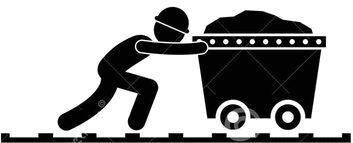

אודות שירותינו
-
הריסות מבנים
לחברה ניסיון ארוך שנים בביצוע פרוייקטי הריסת מבנים כמעט מכל סוג ובכל סדר גודל.
אנו מתמחים בהריסת מבנים באזורים בעלי נגישות מוגבלת, הריסות מתחת למבנים, הריסות בעלות אופי עדין ועוד.
ברשות החברה כלים מכנים הנדסיים בגדלים וסוגים שונים המתאימים לביצוע סוגים שונים של עבודות.
החברה מספקת יעוץ מקצועי ללא התחייבות וללא תשלות.
-
פירוק מבנים לשימור
אנו בחברה זקן ברוך מתייחסים לפירוק מבנים לשימור בצורה הרצינית ביותר,
השימור כולל את מספור האבן, פירוק, דיקוק, חיזוקי קונסטרוקציה, ועבודות בטון.
לחברה ניסיון רב בפירוק מבנים נדירים בעלי ערך היסטורי רב, פרויקטים אלה נחלו הצלחה רבה ולקוחותיהם נמנים בין הרבה לקוחות מרוצים.
-
עבודות חפירה
החברה מספקת פתרונות לעבודות חפירה מכל הסוגים ובכל הגדלים.
חפירות גדולות באמצעות כלים מכנים הנדסיים גדולים כגון באגרים ושופלים ועבודות קטנות יותר באמצעות מחפרונים ובובקטים כמו כן, החברה מבצעת עבודות חפירה בעלי אופי עדין יותר בעזרת קומפרסורים ועבודות חפירה בעבודת כפיים.
-

כריית מנהרות
במשך שנים עסקה החברה בכריית מנהרות בפרוייקט הרכבת מירושלים לתל אביב, העבודה הייתה 24 שעות ביממה ובוצעה בעזרת צוות עובדים מקצועי וכלים מכנים הנדסיים שונים
-
תשתיות
החברה מבצעת עבודת תשתיות הכח מחריפה, ישור השטח, יציקת בטון, גידור ועוד.
-
כריתת עצים
כריתת עצים בכל הגדלים, על ידי כלים מכניים ועל ידי טיפוס בצורה ידנית